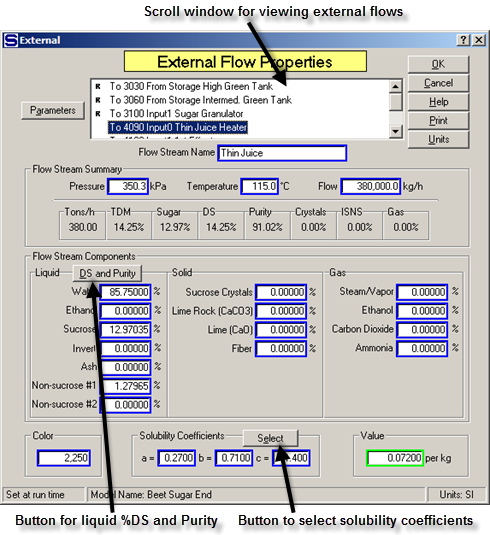
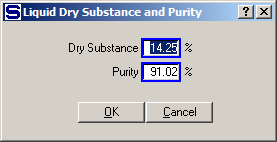
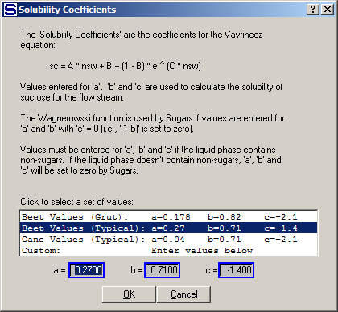
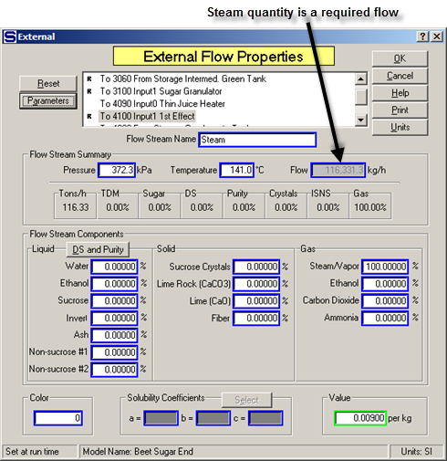
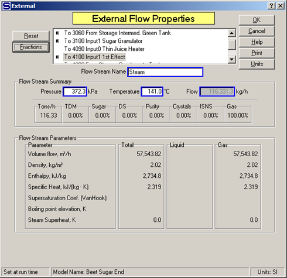

External flows are flows that come from outside sources such as: cane or beets, cold water, chemicals, lime, etc. They are created by dragging the connector tool from an open area in the drawing and then connecting the flow to an input port of a station, or copying a flow stream and pasting it on to the drawing in an open area and then dragging the arrow end of the connection to an input port on a station. All external flows into a model must be defined using the External Flow Properties window. Double click on any external flow in the model to get the External Flow Properties window as shown below. All of the external flows into a model can be viewed using the scroll window and the data for each one can be entered or reviewed by simply highlighting the flow in the scroll window.

Enter the Flow Stream Name, Pressure, Temperature and rate of Flow. The units can be changed at any time by clicking on the Units button and changing to a different units system. Next, enter the flow stream components. Fifteen (15) components define the composition of a flow stream. The components are divided into three phases: liquid, solid and gas. Component fractions for the liquid phase can be entered by using the DS and Purity button next to the Liquid label. Left clicking the mouse on this button will cause a small window to appear for entering the % Dry Substance and Purity of the liquid portion of the flow (see below).

After the % Dry Substance and Purity of the liquid are entered, left clicking the OK button will cause Sugars to calculate the component fractions for the liquid phase. Non-sucrose #1 will contain all of the non-sucrose components in the liquid phase. If the flow stream contains ash and/or invert, they can be removed from the non-sucrose #1and entered into their corresponding component fields. If the flow stream contains any solid or gas phases, then enter the component fractions for each solid or gas component before using the DS and Purity button feature. For example, if a massecuite is being entered, enter the % of sucrose crystals in the flow before determining the liquid component fractions using the Dry Substance and Purity feature for the liquid phase (mother liquor).
Once the flow stream components are entered, values for the column above the Flow Stream Components block will be displayed. Values for the flow are: TDM = % total dry matter of the flow, Sugar = % sugar (both dissolved and crystalline), DS = % dry substance (includes sucrose crystals, if any), Purity = purity including both dissolved and sucrose crystals (if any), Crystals = massecuite % sucrose crystals, ISNS = % insoluble solid non-sugars and Gas = % gas.
Solubility coefficients must be entered for any flow stream that has an entry in either the non-sucrose #1 or non-sucrose #2 component fraction fields. The Select button next to the Solubility Coefficients label will cause Sugars to display a window for selecting solubility coefficients as shown in the figure below.

The typical values displayed on this window can be changed by entering typical solubility coefficients for the process or factory being modeled by clicking the Sugars ribbon menu Model Properties icon and then clicking on the Sol. Coef. button to display the Solubility Coefficient Defaults window. Using this feature, the solubility coefficients can be entered easily without having to make numerical entries in the ‘a’, ‘b’ and ‘c’ fields for every flow stream that needs the solubility defined. Sucrose solubility is calculated using the ‘a’, ‘b’ and ‘c’ values in the Vavrinecz equation unless ‘c’ = 0; in which case, the Wagnerowski equation is used (see Theory - Sucrose Solubility).
Color balances for the model can be obtained by entering a color value for each external flow. The color units for the color entry can be any system as long as it is consistent for the entire model.
A value entry is made for each flow stream if the net process revenues are to be calculated for the model. If all external flows into the model and all internal flows leaving the model have value entries, Sugars will calculate the net process revenues.
Sugars will calculate the steam temperature or steam pressure when saturated steam is entered for an external flow. For example, in the figure below, exhaust steam into the model is saturated and the temperature of the steam is 135.1°C, which gives a pressure of 313.7kPa.

Conversely, if a pressure value is entered and the temperature value is set to a value that is less than the saturation temperature, then Sugars will calculate the saturated steam temperature and change the temperature value to the saturation temperature. Sugars will make the pressure steam calculation if there is any fraction of steam/vapor in the flow stream. Superheated steam is entered by specifying both the pressure and temperature of the steam. The amount of superheat will be calculated by Sugars and displayed in the Flow Stream Parameters list from the Parameters button.
The flow stream quantity will be dimmed and an entry cannot be made if the external flow is a required flow as shown in the above window. The quantity of the flow will be calculated by Sugars when the flow is required and a quantity value cannot be entered. Required flows result from stations that need the quantity to satisfy the performance of the station as defined by the input data for the station. For example, the quantity of the steam flow into an evaporator station will be required if a % dry substance is specified for the syrup leaving the evaporator.

Clicking the left mouse button on the Parameters button will cause Sugars to display other characteristics of the flow stream as shown in the figure above. Volume, density, enthalpy, specific heat, sucrose supersaturation, boiling point elevation and steam superheat can be display for any flow stream. Place the cursor on the "Volume flow" "Liquid" displayed value to see the liquid portion of the flow displayed as liters per minute (lpm) or gallons per minute (gpm) depending on the units (SI or US) being used. Clicking the left mouse button on the Fractions button will return the display to the component fractions.